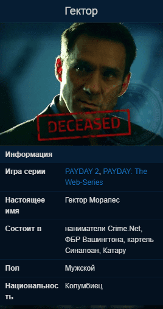

Гектор
Гектор Моралес был колумбийцем по происхождению, но провел много лет на Восточном побережье, развивая силу и досягаемость своего картеля, Синалоан.
После долгой кампании Федеральное бюро расследований смогло собрать достаточное количество доказательств против Гектора, чтобы привлечь его. Однако Гектор и его картель не были настоящей целью. Директор ФБР знал, что Гектор каким-то образом связан с Crime.Net и решил добраться до Бэйна через колумбийцев. Свидетельства против Гектора убедили его, чтобы он привел доказательства власти и использовал свои связи, чтобы попытаться сокрушить Бэйна и банду PAYDAY.
Сговор Гектора с властями был обнаружен, когда член банды, известный как Хокстон, смог получить доступ к секретным записям во время нападения на штаб-квартиру ФБР в здании Гувера. Это привело к тому, что Гектора раскрыли как крысу. Гектор был взят под защиту в охраняемом ФБР убежище. К сожалению, банда PAYDAY смогла проникнуть в этот дом и успешно ликвидировала Гектора.
Описание

Впервые был показан в третьем эпизоде PAYDAY: The Web-Series.
Наркобарон, сутенёр и важная личность в криминальном мире, на которого работают главные герои.
Ранее был бизнес-администратором, но сменил род деятельности на наркоторговлю, в следствии чего стал крупнейшим наркобароном на Восточном Побережье. Следующий в очереди на лидерство картеля Синалоан из Мехико. Колумбиец по происхождению.
Гектор постоянно конфликтует с другими бандами и наркокартелями Вашингтона. Самым главным врагом Гектора является Мендоса, против которого и направлена большая часть контрактов от Гектора.
Судя по файлам ФБР и раскиданным по дому записям в "Мести Хокстона", Гектор попал в руки полиции после своей попытки сбыть украденное из Первого Мирового банка золото, после чего был вынужден работать с ФБР, которые пытались через него добраться до банды PAYDAY.
Является предателем команды, который сдал Хокстона полиции. Его необходимо убить в контракте Месть Хокстона, где его охраной занимаются агенты и спецназ ФБР.
Информацию о подставе Хокстона, а также о месте, где сейчас находится человек, сдавший преступника, узнала Бонни от родственницы Гектора - Джулианы Моралес, которая сидела с шотландкой в одной тюремной камере, и после высвобождения гангстерша поспешила поделиться этими знаниями с Хокстоном, взамен получая от него приглашение на вступление в банду PAYDAY.
Является одним из трёх новых "королей" Катару, "Писарем", остальные двое: Дантист и Слон.
Заказывает ограбления
- Сторожевые псы
- Крысы
- Поджигатель
Раскрывается как крыса и был убит в ходе ограбления Месть Хокстона.